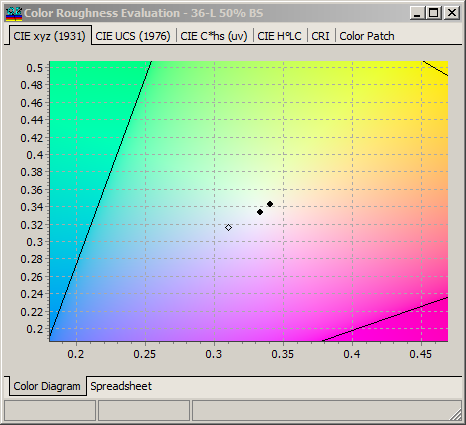
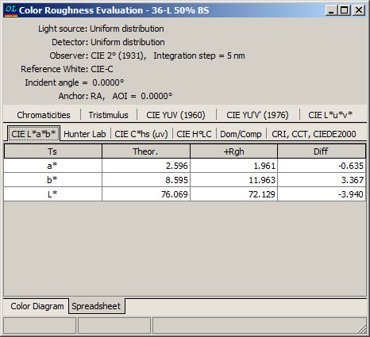
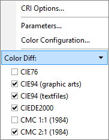
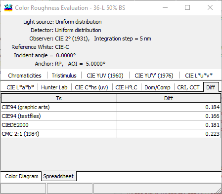

Color Roughness Evaluation
Color Roughness Evaluation
Navigation: OptiLayer Menu Commands > Analysis Menu > Interface Roughness >
Color Roughness Evaluation
` <scatteringevaliation.html>`__ ` <idh_menu_analysis.html>`__ ` <inhomogeneities_interlayers.html>`__
The influence of Interface Roughness on the color properties of the design is presented in this window.

The change of colors is represented in graphical form (the chart above is enlarged).

Changes in color characteristics are also represented in numerical form on the spreadsheet tab of this window.
The differences can be represented using available color difference formulas, which are configurable through the right-click menu.

The “Diff” tab represents variations in colors due to systematic deviations.
